Monitoreo 360° con IA
Rodeo e historial productivo
Registro de pesajes, movimientos y atenciones. Permite evaluar la evolución de cada animal y del lote a lo largo del tiempo.

Rodeo e historial productivo
Registro de pesajes, movimientos y atenciones. Permite evaluar la evolución de cada animal y del lote a lo largo del tiempo.
Condición, anomalías y materia fecal
Condición corporal, reconocimiento, escáner de anomalías (heridas y lesiones) y escáner de materia fecal para análisis.
Sanidad, calor y manejo
Notificaciones priorizadas cuando un animal o un lote requiere intervención. La decisión operativa permanece en el establecimiento.
Carga, forraje y descanso
Integra el estado del lote con el rodeo: qué potrero puede recibir hacienda y cuál requiere reposo.
Vigor del cultivo y del forraje
Seguimiento del establecimiento con imágenes satelitales. Identifica zonas de mayor o menor verdor sin recorrer la totalidad del campo.
Registro en el lote
La información se carga donde ocurre el trabajo. Al restablecerse la conectividad, se sincroniza con la oficina.